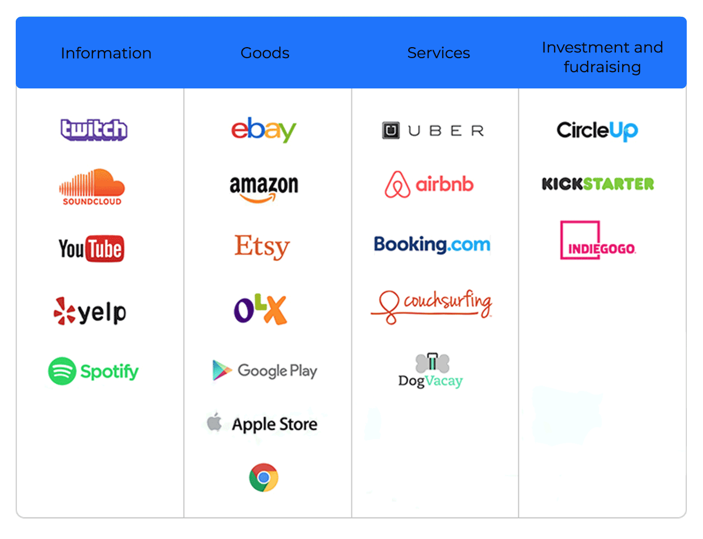

Jun 12, 2020
Marketplace your business Now

I was sure that they were already playing this game. Being the first is the game they were playing and it is the only game in financial markets. Asking myself if it isn’t today’s everywhere the same game. I was able to make the network-wide accessible for all participants but as I knew it was the best and almost sure that all of them would use it, I made it tiny so only a small portion of them could really use it and tell them that before each day of trading we make an auction round … and only companies who offered the best price will have the right to use the network. Our concurrent built a wide system that could host all of them and hosted all of them. We are more successful than them because we marketplaced what they were offering at a premium price. Friction and tension
The lessons are
Help them play their game again and again
let them build the prices and stay in the middle.
MiddleBusiness is a marketplace kind of business. Your financial assets or infrastructure can be marketplaced for more revenues. Lets marketplace them.